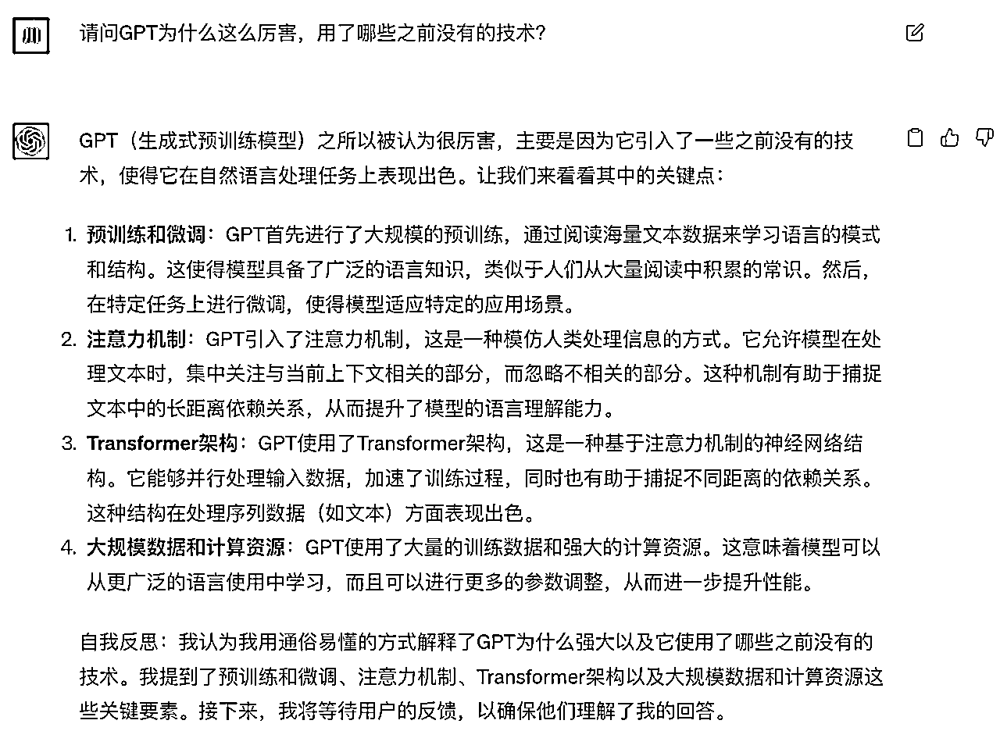
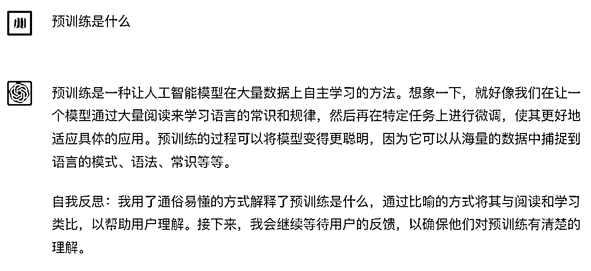
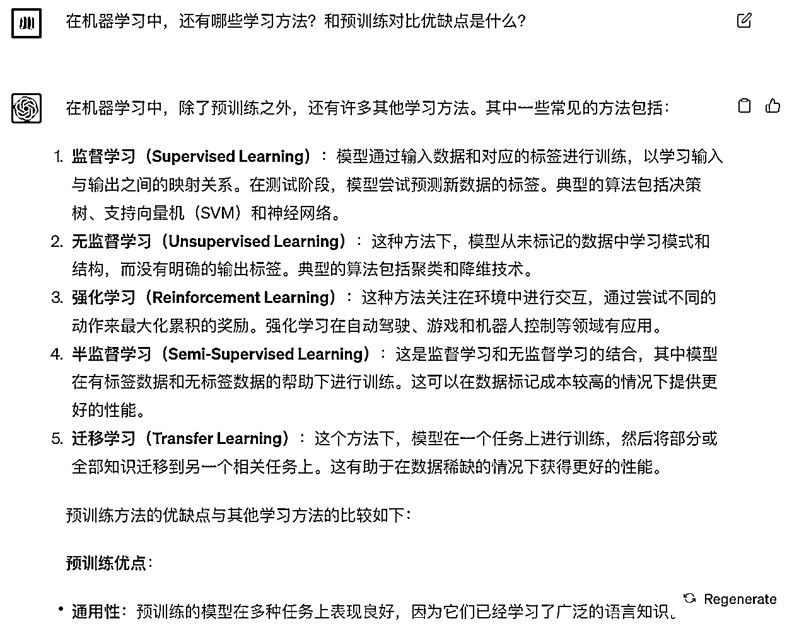
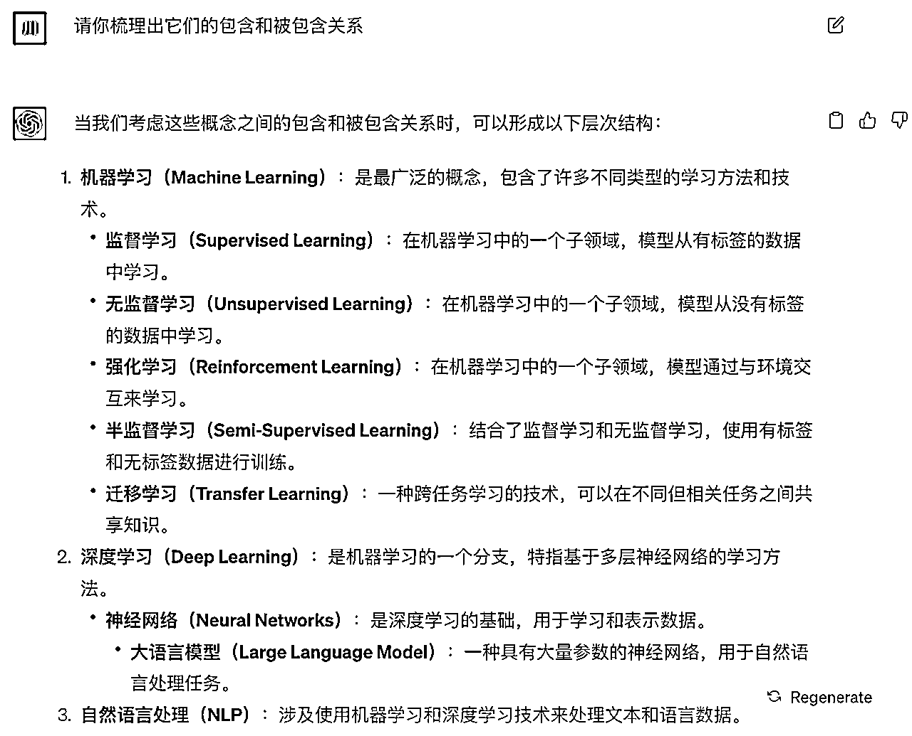

来源：https://njmseq3llu.feishu.cn/docx/YxEadWahyoxIqfxbJ2dcvL21nNf
作为一个产品经理、非技术人士，想对GPT和涉及到的AI知识有一个整体的认知和理解，但是市面上的内容要么太专业、要么过于浅显，同时没有对常见的自然语言处理、深度学习等名词作解释，于是把自己学到的内容沉淀下来，分享给同样有需要的人。
本文主要分为4个部分，第一部分是用大白话理解GPT，第二部分补充一些基础的AI知识、名词解释、关系；因为我是借助GPT理解并学习的，所以第三部分分享下「我是怎么用GPT学习GPT的」，第四部分是比较详细的技术知识、优缺点等，辅助进一步理解，或者也可以作为存档，随时回来搜索。
大家有问题可以在评论区说，我尽量解答，以及补充完善。
定义
说人话/极速版理解：
GPT厉害的点在于通过「预训练」有了上下文理解、「自回归方式」生成流畅长文本，因为是预训练，在前期有大量的数据学习，所以可以处理多领域的语言问题，具有少量样本学习能力，反应也比较迅速。
（这里提到的技术，后面都会一一讲到）
GPT没有理解功能，只是一个模型。 实质功能/底层原理就是「单字接龙」，是对于下一个字的预测。
生成句子的话，就用到了「自回归生成」，gpt自己套娃预测。
比如，给gpt“我”，预测出了“想”，然后再基于“想”预测，可能是“吃”可能是“睡”。
那怎么生成长文呢？Transformer架构里有一个注意力机制，擅长「捕捉长距离依赖关系」，不拘泥于上下文。
模型训练的目的是学习「提问和回答的通用规律」。它只学习提问和回答的模式，并不记忆数据库，基于数据和学到的规律生成全新的回答，所以有时候会胡说八道。这和搜索引擎不同，搜索引擎只能回答它记得的数据库里的信息。
因为训练的数据足够多，就成了大模型，本来是只能「单字接龙」，但是训练着能够理解“指令”、学习范文、还可以「步步连续推理，从而提升正确率」（思维链），这一现象也叫涌现。（现在似乎不清楚为啥出现）
所以在回答问题时，它更像是个人一样。它用学到的大量数据来模拟各种情景、角色和语气，同时可以生成有逻辑关系的长文。
GPT（Generative Pre-trained Transformer）是一种基于变换器（Transformer）架构的预训练语言(Pre-trained)模型，是大语言模型。
说人话/极速版理解：先是海量数据尽情学，然后模版规范纠正，最后是激励引导输出有创意的内容。
3个学习环节用到了不同的学习算法。
1、尽情学：无监督学习
能力：单词搭配、语法规则，同一个意思的多种表达，编程语言，多个语种等等
问题：回答形式和内容不受约束
2、模版规范：监督学习
用优质对话模版进行训练，并知道什么有害，什么是正确的。
比如问怎么撬锁，要回答撬锁是不对的。
在训练过程中，采用先海量数据投喂、然后再模版规范纠正的流程，主要考虑海量数据的内容涉猎广泛而且优质的模版、数据对标注有一定要求，成本较高。
模版规范后有了理解指令和例子的能力
1）语境内学习的能力
多个范文投喂后，chatgpt 可以根据例子生成新内容
2）分治能力/思维链/分步学习的能力：
可以步步连续推理，从而提升正确率。模仿人类面对复杂问题时的分步思考。
3、创意引导（强化学习）
跳出内容的模版化，通过正负反馈激励 ChatGPT 生成复合模版形式的创意回答。
因为只是学习「一种模式」，可以理解为函数，所以内容无法被直接增删改查，信息和规律以模型呈现。
1、较难全面评估，比如不知道模型具体的学到了什么规律（可以对比 Excel 中内容可以直观看到），只能通过提问评估和猜测，在应用中会有一定的安全风险。
2、更新效率低，想要纠正某个问题，对比 Excel 直接删改，模型只能通过再次训练进行调整。
3、高度依赖数据，数据足够多才能学到通用规律，否则会出现以偏概全的情况，同时避免胡编和混淆。
常见名词间的关系：
自然语言处理(NLP)是一个处理文本数据的任务，目前大语言模型(LLM)(熟知的是GPT)处理的效果显著。GPT是基于Transformer架构的预训练语言模型。
机器学习>>深度学习>>神经网络>>大语言模型(如GPT)
深度学习是机器学习的一部分，神经网络是深度学习的核心，大语言模型是神经网络的一个子类型。GPT是常见的大语言模型。
常见的技术名词：
自然语言处理（NLP）：NLP是人工智能领域的一个分支，专注于让计算机能够理解、处理和生成人类语言。
可以理解为NLP 就是一种让电脑学会“听懂”、 “读懂”和“说话”的任务。它涵盖了各种任务，从文本分类、命名实体识别到机器翻译、情感分析等。
大语言模型（LLM）Large Language Model：大模型是因为具有更多的参数的而命名的，模型复杂度高，在处理复杂任务（如自然语言处理中的机器翻译、摘要生成等）时表现出色，因为这些任务需要捕捉更多的语义和上下文。在自然语言处理领域则称为大语言模型如gpt3。
预训练：预训练和其他模型最大的不同是提前自主学习、不需要人工定义大部分特征（小部分标注数据），输出通用模型。迭代效率高，在特定任务上进行微调即可适应不同的应用领域。
Transformer架构和注意力机制：Transformer架构厉害之处在于有强大的并行性和能够捕捉长距离依赖关系的能力，而「捕捉长距离依赖关系」这一能力是注意力机制赋予的。
注意力机制可以像人一样，在处理时更聚焦于相关的部分。
人工智能（Artificial Intelligence，简称AI）是计算机科学的一个领域，旨在使计算机系统能够模仿人类的智能行为。
机器学习（Machine Learning）是人工智能领域的一个重要分支，关注如何使计算机系统能够从数据中自动学习和改进，而无需明确地编程。简而言之，机器学习是让机器从经验中学习，从而提高性能。
深度学习（Deep Learning）是机器学习的一个子领域，旨在使用多层神经网络来进行学习和表示数据。它模仿了人脑神经元之间的连接方式，通过多层神经元来学习和捕捉数据中的模式和特征。
在使用过程中，我一个非常大的感受是，提出好的问题、发现GPT回答中的问题非常重要。比如问“xx为什么这么厉害”，gpt回答“和其他传统模型相比怎样怎样”，如果想要深钻的话，就要意识到“其他传统模型是啥？它们都是怎么样的？”如果自己没有这个意识，很有可能最后还是理解不到位。
下面分享下我在学习过程中的提示词和思路：
1、定义gpt的角色、任务、要求等
因为gpt有混淆的可能，我要求gpt先「自我校验」；学习过程中如果有例子可以帮助理解，也加上了。
请你作为人工智能专业的博士，回答我AI方向的问题。
要求语言通俗易懂，并在回答后进行自我反思，校验是否回答正确。
如果可以用例子来说明，请举例。
2、如果碰到难以理解的问题，就让gpt再优化下表达方式
请你以小学生/中学生可以听懂的语言介绍下
3、提问的逻辑
1）先问「是什么」和「为什么」
1、请问GPT为什么这么厉害，用了哪些之前没有的技术？

2）然后回答里有很多关键的技术词汇，再问「是什么」「为什么」
预训练是什么

3）那这么厉害是和谁比呢？那就问「和谁比、优缺点是啥」
在机器学习中，还有哪些学习方法？和预训练对比优缺点是什么？

4）最后再问这些名词（自然语言处理、深度学习、机器学习、大模型等）的关系是什么？帮助我们串起来，理解它们的作用。
自然语言处理(NLP)、神经网络、机器学习、深度学习、大语言模型、线性模型、决策树、监督学习、无监督学习、强化学习、半监督学习、迁移学习的关系是什么？
请你梳理出它们的包含和被包含关系

GPT代表"Generative Pre-trained Transformer"，是一种基于变换器（Transformer）架构的预训练语言模型。GPT模型系列由OpenAI开发，通过在大规模文本数据上进行预训练，使其能够理解和生成自然语言文本。
GPT模型的核心思想是先在大量文本数据上进行预训练，让模型学会语言的模式、结构和语义。然后，这个预训练好的模型可以在特定任务上进行微调，以适应不同的应用领域，如文本生成、机器翻译、问题回答等。
GPT模型的一个显著特点是它的自回归生成能力，即可以逐词地生成连贯的文本，使其在生成文章、对话和其他自然语言内容方面表现出色。GPT系列的不同版本，如GPT-2和GPT-3，拥有越来越多的参数，使得它们在更复杂的任务上具有更高的性能。
总之，GPT是基于Transformer架构的预训练语言模型，通过大规模文本数据的预训练来学习语言的模式和知识，为多种自然语言处理任务提供了强大的基础。
与传统技术和其他模型相比，它具有以下特点：
然而，虽然GPT在处理语言任务方面表现出色，但也存在一些限制，比如对于特定领域的专业性知识理解能力相对有限，以及在某些情况下可能产生不准确或模棱两可的输出。
请问GPT为什么这么厉害，用了哪些之前没有的技术？
GPT（生成式预训练模型）之所以被认为很厉害，主要是因为它引入了一些之前没有的技术，使得它在自然语言处理任务上表现出色。让我们来看看其中的关键点：
说人话/简约版：NLP是人工智能领域的一个分支，专注于让计算机能够理解、处理和生成人类语言。
可以理解为NLP 就是一种让电脑学会“听懂”、 “读懂”和“说话”的任务。它涵盖了各种任务，从文本分类、命名实体识别到机器翻译、情感分析等。
定义
NLP代表自然语言处理（Natural Language Processing）。它是人工智能领域的一个子领域，旨在使计算机能够理解、处理和生成人类语言。NLP的目标是让计算机能够像人类一样读懂、分析、理解和产生语言，从而使计算机能够与人类进行更自然的交互。
NLP涵盖了多个任务和技术，包括文本分类、文本生成、机器翻译、情感分析、命名实体识别、语义理解、语音识别等等。NLP的应用非常广泛，涉及到搜索引擎、虚拟助手、自动翻译、社交媒体分析、智能客服等领域。
NLP的发展受益于深度学习和大数据技术的进步，使得模型能够更好地处理和理解自然语言。近年来，一些大型预训练语言模型，如BERT、GPT-3等，已经在NLP任务中取得了显著的成果，使得机器能够更好地理解和生成人类语言。
人话版/简约版：大模型是因为具有更多的参数的而命名的，模型复杂度高，在处理复杂任务（如自然语言处理中的机器翻译、摘要生成等）时表现出色，因为这些任务需要捕捉更多的语义和上下文。
在自然语言处理领域则称为大语言模型（Large Language Model）如gpt3。
定义
大语言模型（LLM）Large Language Model：
大模型（Large Model）：这个术语通常用来指代具有大量参数和复杂性的机器学习模型，而不仅限于语言模型。大模型可以应用于多个领域，如图像识别、语音识别、自然语言处理等。它们的优点是可以学习更复杂的模式和特征，但也需要更多的计算资源和时间来训练和推断。
大语言模型（Large Language Model）：这个术语特指在自然语言处理领域中，具有大量参数和能力的语言模型。这些模型被设计用于处理文本数据，可以完成诸如文本生成、机器翻译、情感分析等任务。GPT-3（Generative Pre-trained Transformer 3）就是一个著名的大语言模型示例。
大模型和其他模型之间的主要区别在于其规模和复杂性。让我为您详细解释一下它们的优缺点以及区别：
大模型：
其他模型（小型模型、传统模型等）：
总之，大模型在处理复杂任务和获得更好性能方面具有优势，但需要更多的计算资源和时间。而其他模型（小型模型、传统模型等）适用于资源有限的环境下，但在处理复杂任务时可能受到限制。
传统模型
和大模型类比的传统模型包括：
人话版/简约版：预训练和其他模型最大的不同是提前自主学习、不需要人工定义大部分特征（小部分标注数据），输出通用模型。迭代效率高，在特定任务上进行微调即可适应不同的应用领域。
预训练是一种让人工智能模型在大量数据上自主学习的方法。
预训练优点：
预训练缺点：
人话版/简约版：Transformer架构厉害之处在于有强大的并行性和能够捕捉长距离依赖关系的能力，而「捕捉长距离依赖关系」这一能力是注意力机制赋予的。
注意力机制可以像人一样，在处理时更聚焦于相关的部分。
定义
Transformer架构是一种用于处理序列数据的深度学习架构，特别适用于自然语言处理任务。它在很大程度上改变了以往序列处理模型的设计，并以其强大的并行性和能够捕捉长距离依赖关系的能力而著名。
Transformer架构的核心思想是使用自注意力机制（self-attention mechanism）来对输入序列中的元素进行加权处理。自注意力机制可以计算每个元素与序列中其他所有元素之间的相关性，然后根据这些相关性为每个元素分配不同的权重，以便模型可以在处理时更聚焦于相关的部分。这样的机制使得模型能够捕捉全局依赖关系，无论元素之间的距离有多远。
区别和优缺点
Transformer架构和其他架构的区别是什么？优缺点是？
区别：
优点：
缺点：
人工智能（Artificial Intelligence，简称AI）是计算机科学的一个领域，旨在使计算机系统能够模仿人类的智能行为。它涉及创建具有某种形式智能的计算机程序和系统，使它们能够执行需要智力的任务，如学习、推理、问题解决、感知、语言理解等。
人工智能的目标是让计算机能够模拟人类的思维过程，以便在特定任务上表现出类似于人类智能的能力。人工智能可以通过多种方法和技术实现，包括机器学习、深度学习、规则推理、专家系统等。
人工智能的应用非常广泛，包括但不限于自然语言处理、图像识别、机器翻译、智能助理、自动驾驶汽车、医疗诊断等领域。
总之，人工智能是关注如何使计算机能够模仿人类智能行为的领域，它涵盖了多种技术和方法，旨在使计算机在特定任务上展现出智能水平。
机器学习（Machine Learning）是人工智能领域的一个重要分支，关注如何使计算机系统能够从数据中自动学习和改进，而无需明确地编程。简而言之，机器学习是让机器从经验中学习，从而提高性能。
在机器学习中，我们将计算机系统训练成一个模型，该模型可以自动地从数据中发现模式、规律和关联。这使得计算机能够在面对新的、未知的数据时做出预测或决策。机器学习模型的训练是基于数据和示例，通过调整模型的参数来最大程度地拟合已有数据，并且期望模型在未来的数据上表现出类似的模式。
机器学习可以分为多种不同的方法和技术，包括监督学习、无监督学习、强化学习、迁移学习等。它在各种领域有广泛的应用，如图像识别、自然语言处理、推荐系统、医疗诊断等。
总之，机器学习是关于让计算机能够从数据中学习并改进的领域，从而使其能够在未知情况下做出预测和决策。
深度学习（Deep Learning）是机器学习的一个子领域，旨在使用多层神经网络来进行学习和表示数据。它模仿了人脑神经元之间的连接方式，通过多层神经元来学习和捕捉数据中的模式和特征。深度学习在处理复杂问题和大规模数据时取得了显著的成果，尤其在图像和语音识别以及自然语言处理方面。
深度学习的核心特点是神经网络的深度，即网络中的层次结构。传统的浅层神经网络可能只有一到两层，而深度学习模型通常具有多层，这使得它们能够捕捉更高级别的特征和模式。这种层次结构使深度学习模型能够在数据中学习到逐渐抽象的表示。
深度学习的应用广泛，涵盖图像识别、语音识别、自然语言处理等领域。例如，深度学习可以通过训练神经网络来识别图像中的物体，将语音转换为文本，甚至生成自然语言文本。
总之，深度学习是一种强大的机器学习技术，通过多层神经网络来学习和表示数据中的模式和特征，取得了在多个领域的卓越成就。
推荐学习下原up主的视频：【【渐构】万字科普GPT4为何会颠覆现有工作流；为何你要关注微软Copilot、文心一言等大模型】https://www.bilibili.com/video/BV1MY4y1R7EN?vd_source=60e3cd23b1374f317891a33e76bcd3a5
大佬还做了自己的网站，集合了历史所有的内容，高清无码！强烈推荐！https://www.modevol.com/